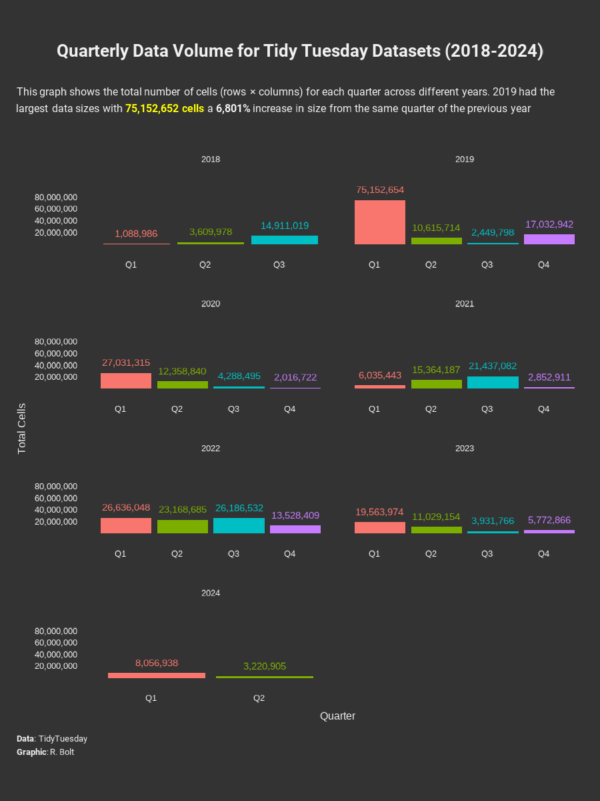
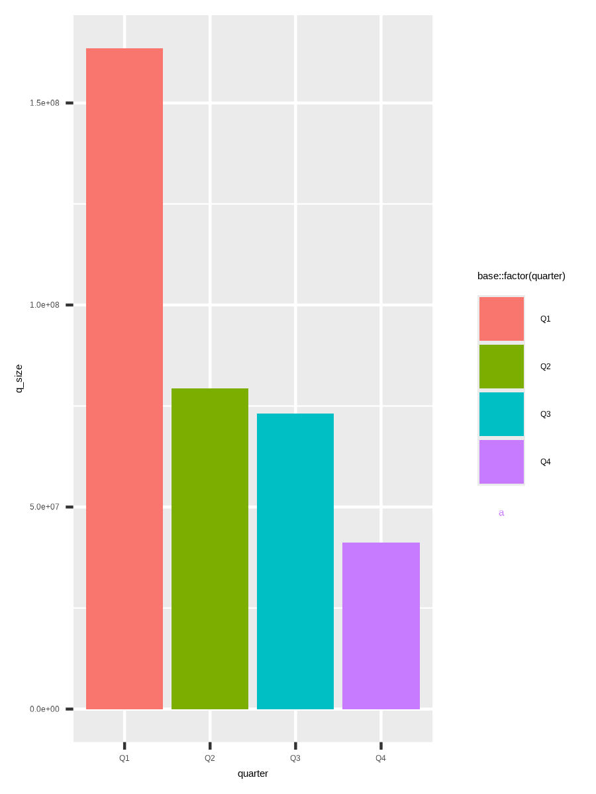
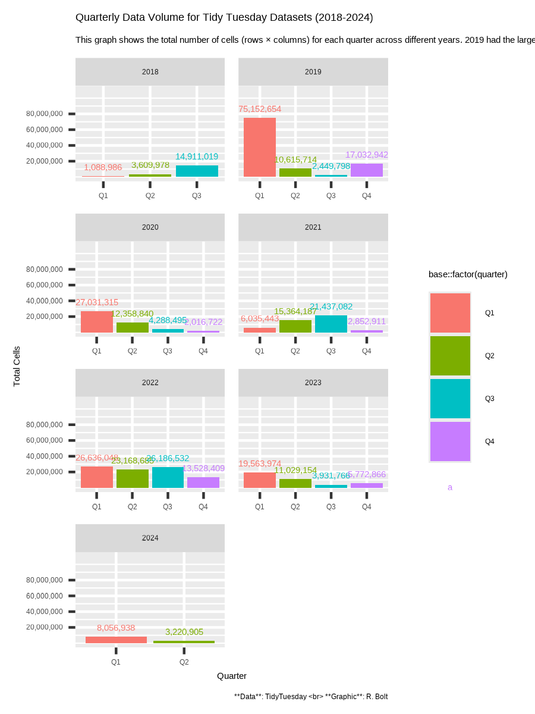

Show code
#### Load packages ####
base::library(tidyverse)
base::library(showtext)
base::library(cowplot)
base::library(ggtext)
base::library(camcorder)July 2, 2024
My Week 27 TidyTuesday entry analyzes TidyTuesday dataset sizes by quarter over the years.

This week we’re exploring our own data! The data this week comes from our {ttmeta} package, which automatically updates with information about the TidyTuesday datasets. The data shared here was compiled on 2024-06-18.
Inspired by Nicola Rennie, and ggplot2: Elegant Graphics for Data Analysis (3e).
Packages:
Data:
Fonts:
Colors:
Text:
#### Define Text ####
title <- "Quarterly Data Volume for Tidy Tuesday Datasets (2018-2024)"
st <- "This graph shows the total number of cells (rows × columns) for each quarter across different years. 2019 had the largest data sizes with <span style = 'color:yellow;'>**75,152,652 cells**</span> a **6,801%** increase in size from the same quarter of the previous year"
cap <- "**Data**: TidyTuesday <br> **Graphic**: R. Bolt"
xlab <- "Quarter"
ylab <- "Total Cells"Wranglin’:
#### Data Wrangling ####
plot_data <- tt_datasets |>
mutate(size = observations * variables) |>
group_by(year, week) |>
summarize(total_size = sum(size), .groups = 'drop') |>
mutate(quarter = case_when(
week <= 13 ~ "Q1",
week <= 26 ~ "Q2",
week <= 39 ~ "Q3",
week <= 52 ~ "Q4"
)) |>
group_by(year, quarter) |>
reframe(q_size = sum(total_size))
Plot1:
Data
Aesthetics
Geometries

plot2:
Labels
Scales
Facets
plot3: (final plot)
plot3 <- plot2 +
ggplot2::theme_minimal(base_size = 12) +
ggplot2::theme(
# Title
plot.title = element_text(
colour = text_col,
size = rel(1.6),
margin = margin(b = 10, t = 10),
lineheight = 0.5,
family = title_font,
face = "bold",
hjust = .5
),
# Subtitle
plot.subtitle = element_textbox_simple(
colour = text_col,
margin = margin(b = 10, t = 0),
lineheight = 0.5,
family = title_font,
hjust = .5
),
# Caption
plot.caption = element_textbox_simple(
colour = text_col,
margin = margin(b = 10, t = 5),
lineheight = 0.5,
family = title_font
),
# Axis Titles
axis.title.y = element_text(
color = text_col,
vjust = .5),
axis.title.x = element_text(color = text_col),
# Axis Text
axis.text.x = element_text(
vjust = 1.5,
hjust = 1,
color = text_col),
axis.text.y = element_text(color = text_col),
# Title and Caption Position
plot.title.position = "plot",
plot.caption.position = "plot",
# Background Color
plot.background = element_rect(
fill = bg_col,
colour = bg_col),
panel.background = element_rect(
fill = bg_col,
colour = bg_col),
# Remove Grid lines
panel.grid.major.y = element_blank(),
panel.grid.minor.y = element_blank(),
panel.grid.major.x = element_blank(),
panel.grid.minor.x = element_blank(),
# Facets
strip.text = element_text(color = text_col),
# Legend
legend.position = "none"
) Extended the Y limit and added defined breaks to ensure the value 75,152,654 isn’t cut off at the top of the graph.
Opted for quarters instead of weeks for easier readability, showing a wide variation in dataset sizes across quarters.
The quarters for 2018 are incorrect. To fix this, I could offset the weeks in 2018 by adding 13 to each week for correct filtering.
Theming initially feels overwhelming but ultimately comes together well.
---
title: "Week 27 Tidy Tuesday: Tidy Tuesday Meta Data"
date: "2024-07-02"
categories: ["#TidyTuesday", "R", "Data Visuals"]
draft: false
execute:
eval: false
format:
html:
code-fold: true
code-summary: "Show code"
code-tools: true
---
My Week 27 TidyTuesday entry analyzes TidyTuesday dataset sizes by quarter over the years.

# Tidy Tuesday Meta Data
This week we're exploring our own data! The data this week comes from our [{ttmeta}](https://r4ds.github.io/ttmeta/) package, which automatically updates with information about the TidyTuesday datasets. The data shared here was compiled on 2024-06-18.
# Code
Inspired by [Nicola Rennie](https://nrennie.rbind.io/blog/), and [ggplot2: Elegant Graphics for Data Analysis (3e)](https://ggplot2-book.org/).
::: panel-tabset
### Load Packages & Data
Packages:
```{r load packages}
#### Load packages ####
base::library(tidyverse)
base::library(showtext)
base::library(cowplot)
base::library(ggtext)
base::library(camcorder)
```
Data:
```{r load data}
#### Load Data ####
tt_datasets <- readr::read_csv('https://raw.githubusercontent.com/rfordatascience/tidytuesday/master/data/2024/2024-07-02/tt_datasets.csv')
```
### Load Fonts & Colors
Fonts:
```{r load fonts}
### Load Fonts ####
sysfonts::font_add_google("Roboto", "robo")
showtext::showtext_auto()
title_font <- "robo"
```
Colors:
```{r load colors}
#### Load Colors ####
bg_col <- "#333333"
text_col <- "#F0F0F0"
```
### Define Text
Text:
```{r define text}
#### Define Text ####
title <- "Quarterly Data Volume for Tidy Tuesday Datasets (2018-2024)"
st <- "This graph shows the total number of cells (rows × columns) for each quarter across different years. 2019 had the largest data sizes with <span style = 'color:yellow;'>**75,152,652 cells**</span> a **6,801%** increase in size from the same quarter of the previous year"
cap <- "**Data**: TidyTuesday <br> **Graphic**: R. Bolt"
xlab <- "Quarter"
ylab <- "Total Cells"
```
### Data Wrangling
Wranglin':
```{r}
#### Data Wrangling ####
plot_data <- tt_datasets |>
mutate(size = observations * variables) |>
group_by(year, week) |>
summarize(total_size = sum(size), .groups = 'drop') |>
mutate(quarter = case_when(
week <= 13 ~ "Q1",
week <= 26 ~ "Q2",
week <= 39 ~ "Q3",
week <= 52 ~ "Q4"
)) |>
group_by(year, quarter) |>
reframe(q_size = sum(total_size))
```
:::
# Plot
::: panel-tabset
### Define Aesthetics & Geometries

Plot1:
* Data
* Aesthetics
* Geometries
```{r}
plot1 <- ggplot2::ggplot(
plot_data,
ggplot2::aes(
x = quarter,
y = q_size,
fill = base::factor(quarter)
)
) +
ggplot2::geom_col() +
ggplot2::geom_text(
ggplot2::aes(
label = base::formatC(
q_size,
format="d",
big.mark=","
),
color = base::factor(quarter)),
vjust = -1
)
```
### Define Labels & Scales

plot2:
* Labels
* Scales
* Facets
```{r}
plot2 <- plot1 +
ggplot2::labs(
title = title,
subtitle = st,
caption = cap,
x = xlab,
y = ylab
) +
ggplot2::scale_y_continuous(
limits = c(0, 110000000),
breaks = c(20000000,40000000,60000000,80000000),
labels = scales::comma,) +
ggplot2::facet_wrap(
~year,
ncol = 2,
scales = "free_x")
```
### Define Theme

plot3: (final plot)
* Themes
```{r}
plot3 <- plot2 +
ggplot2::theme_minimal(base_size = 12) +
ggplot2::theme(
# Title
plot.title = element_text(
colour = text_col,
size = rel(1.6),
margin = margin(b = 10, t = 10),
lineheight = 0.5,
family = title_font,
face = "bold",
hjust = .5
),
# Subtitle
plot.subtitle = element_textbox_simple(
colour = text_col,
margin = margin(b = 10, t = 0),
lineheight = 0.5,
family = title_font,
hjust = .5
),
# Caption
plot.caption = element_textbox_simple(
colour = text_col,
margin = margin(b = 10, t = 5),
lineheight = 0.5,
family = title_font
),
# Axis Titles
axis.title.y = element_text(
color = text_col,
vjust = .5),
axis.title.x = element_text(color = text_col),
# Axis Text
axis.text.x = element_text(
vjust = 1.5,
hjust = 1,
color = text_col),
axis.text.y = element_text(color = text_col),
# Title and Caption Position
plot.title.position = "plot",
plot.caption.position = "plot",
# Background Color
plot.background = element_rect(
fill = bg_col,
colour = bg_col),
panel.background = element_rect(
fill = bg_col,
colour = bg_col),
# Remove Grid lines
panel.grid.major.y = element_blank(),
panel.grid.minor.y = element_blank(),
panel.grid.major.x = element_blank(),
panel.grid.minor.x = element_blank(),
# Facets
strip.text = element_text(color = text_col),
# Legend
legend.position = "none"
)
```
### Links
Links:
[R for Data Science's #TidyTuesday Repo](https://github.com/rfordatascience/tidytuesday?tab=readme-ov-file)
[Randi Bolt's #TidyTuesday Repo](https://github.com/rbolt13/tidytuesday)
### Save
Save the image:
```{r Recroding}
#### Save ####
ggplot2::ggsave(
filename = "plot3.png",
plot = plot3,
device = "png",
width = 3,
height = 4,
units = "in",
dpi = 300)
```
:::
# Quick Notes
* Extended the Y limit and added defined breaks to ensure the value 75,152,654 isn't cut off at the top of the graph.
* Opted for quarters instead of weeks for easier readability, showing a wide variation in dataset sizes across quarters.
* The quarters for 2018 are incorrect. To fix this, I could offset the weeks in 2018 by adding 13 to each week for correct filtering.
* Theming initially feels overwhelming but ultimately comes together well.